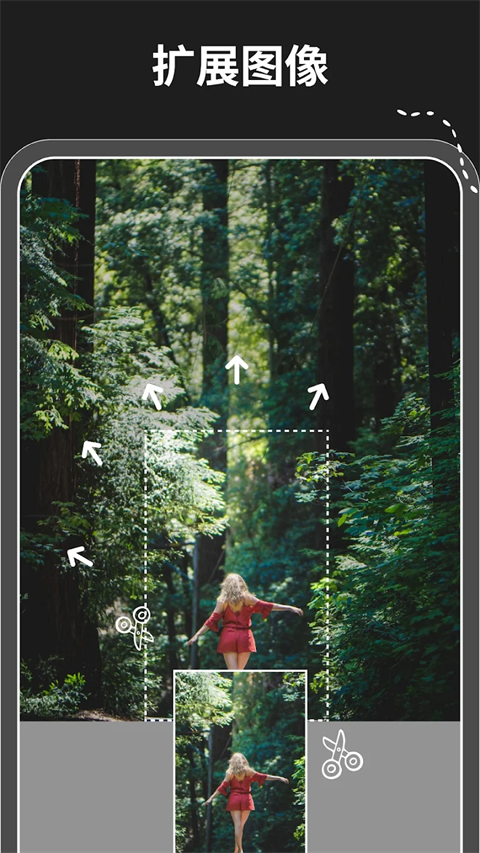

对比评测：AI 消除工具里，Magic Eraser 凭什么让我从同类里留它到最后？
用过至少五款同类擦除工具后，Magic Eraser 是少数能让我反复回去用的——简单到五分钟上手，但在阴影倒影、低对比边缘这些难啃的场景上，它的表现比大厂方案稳得多。
它在这个类目里的位置
AI 消除工具这个赛道，现在已经是一片红海。往高端看，Photoshop 的内容感知填充还是那个老标杆——效果顶得上专业修图，但门槛也顶得上：订阅费、学习成本、桌面端限制，日常修张路人不值得开它。往免费看，大厂方案凑上来：Google 的 Magic Eraser 跟着 Pixel 手机走、Adobe Express 网页端也有同款按钮、甚至系统相册自带的"移除对象"都能凑合用——但这些工具几乎都有一个共同问题：简单场景够用，一碰到阴影倒影、低对比边缘这种细节就开始翻车。
Magic Eraser 就卡在这个中间地带：它的官网打开就能用，零注册门槛、零付费压力，但在那些容易翻车的细节场景上，它的表现居然比不少大厂方案还稳。我用了大半年，把手机相册里存的同类工具试了个遍，最后留下的就是它。不是因为它功能最多，是因为它在"消除"这件事上的专注度，让我省了很多重跑的时间。
阴影和倒影不是画蛇添足，是它真的能一起消
第一次用 Magic Eraser 的时候我没抱太大期望——随手涂了沙滩上的一个路人，结果人没了，他脚下那片随着阳光斜投的阴影也跟着一起消干净了。之前用同类工具的时候，我得先涂人、再单独涂影子，而且分两次涂的时候，中间那片地面纹理经常衔接不上，AI 补出来的沙子颜色偏深偏浅的，看得出来是修过的。
Magic Eraser 的做法不一样：你从人的头顶一路涂到他脚踩的地方，画笔带过的那片影子区域，AI 自动识别为"属于同一个要消除的物体"，一次性填补完整。水面倒影、墙面投影这些同理——只要你涂的时候把主体和倒影/投影连起来，AI 就不会单独漏一块。我后来专门找了几张类似的照片对比：同类工具分三次涂才能消干净的，它一次搞定。
这件事听起来是个小细节，但修图体验差很多。你不用停下来想"影子在哪个方向"、"要不要分两次涂"，直接跟着物体的轮廓一路画过去就行。光影本来就是照片的一部分，单独消物体不留影子，那叫修图，不叫"消除"。
低对比边缘处理不翻车，这一点同类工具很难比
白墙前的白杯子、黑发飘在深灰背景上、灰色衣服挂在灰色墙上——这些场景是 AI 消除的重灾区。人眼能清楚地分辨"杯子和桌子不是同一个东西"，但很多工具的边缘识别只看颜色差异，颜色差得越小，它的掩膜就越不准，要么消错主体的一部分、要么在边缘留一圈细细的痕迹。
Magic Eraser 在这种情况下的表现让我印象深刻。我拿了一张朋友在纯白幕布前的半身照测试——她穿的白色衬衫和背景几乎融在一起，头发也是深黑色。我用最小画笔慢慢描她的轮廓，从额头到肩膀到领口的白色衬衫，一笔带过。消除完一看，衬衫边缘没有留那圈细细的痕迹，头发和背景的交界处也补得自然。同样一张图，我用另一个大厂免费工具试了，衬衫领口的位置被消掉了一小块，补出来的是幕布的纯白，看得出来是错的。

它的策略其实很朴素：画笔越小越精准，涂的时候只碰你真的想消的那部分，一点都不碰旁边的东西。很多工具默认给个大画笔，想快一点，但大画笔在低对比场景等于瞎涂。Magic Eraser 的画笔大小调节做得直观，拖滑块就够，不用进设置菜单找。更多画笔调节和涂抹技巧的细节，去Magic Eraser文档里翻就行。
增强和消除是组合拳，不是两张皮
同类工具还有一个通病：要么只有消除功能，要么消除和增强是两个完全独立的模块，导出再导入、切软件再切回来。老照片修复是最典型的场景——你得先修发糊、再消折痕、再调颜色，这个流程在大多数工具里要来回导好几次。
Magic Eraser 把增强和消除打通在同一份画布里。我外婆 1985 年的一张家庭相册翻拍件，发糊、有折痕、颜色泛黄、边角还有破损，流程是这样的：先跑一次增强让整体清晰度上来，折痕的位置暴露得更清楚了；然后逐块涂掉折痕和污渍；最后再增强一次让消除的区域和周围融合一下。整个过程没切过工具，画布里直接切换模式就行。免费档的增强功能也能用，只是导出带水印、分辨率有限——自己做电子相册完全够。
它为这些优势付出了什么
说了三个差异化的点，得客观讲它的取舍。Magic Eraser 不是万能的，有些地方你要是指望它就会失望。
平台限制：网页端是主力，虽然可以去下载拿移动端 APK，但没有桌面客户端。习惯了 Photoshop 或者 Affinity Photo 那种本地软件的人，可能会觉得它不够重——但反过来说，零安装、打开浏览器就用，本身也是优势。
复杂场景上限：大面积破损、人脸严重模糊、颜色严重褪色这些，它的效果就不如专业修图软件了。AI 消除的本质是用周围像素填补空洞，空洞太大、周围没有足够参考，补出来的东西就不靠谱。透明物体也是一样——玻璃杯子、半透明塑料袋，AI 分不清"透明物体本身"和"透过它看到的背景"，一起消的时候背景会出问题，这是当前 AI 能力的边界，不是它一家的问题。
免费档有限制：导出带水印、分辨率受限、单次处理的图片大小有上限。如果是商业用途或者需要无水印高分辨率导出，得看付费档。不过日常修自己的照片，免费档完全够用。
选购结论：什么样的人选它
如果你是下面这类情况，直接选 Magic Eraser 就对了：日常想消掉照片里的路人、电线杆、电线这类小杂物；有几张想修的老照片但不想开专业修图软件；不想注册、不想付费、不想学复杂工具，打开浏览器就能修。它在这些场景下的表现，比同价位甚至更贵的工具都稳。
但如果你是专业修图师、需要批量处理大项目、或者有特殊插件和工作流需求，那它确实不是最优选择——Photoshop 或者 Affinity Photo 还是得用。
我的判断很简单：当你遇到"消了三次还消不干净"的情况时，关掉你正在用的那个工具，打开 Magic Eraser，再试一次。八成会比之前好。
写东西到这里，顺手交代一下——完整的软件归档在GitHub上能找到，Gitee和GitCode也各存了一份，怕哪天某个仓库访问不畅的时候还有得看。